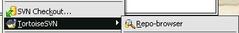
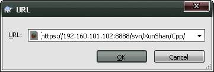
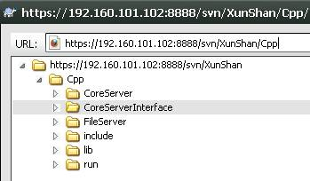
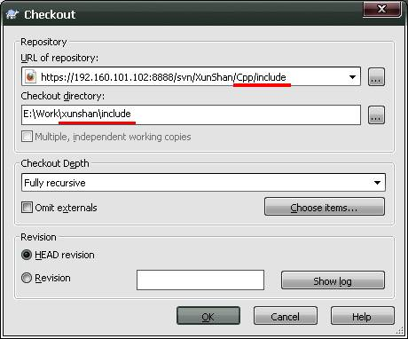
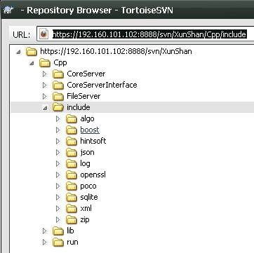
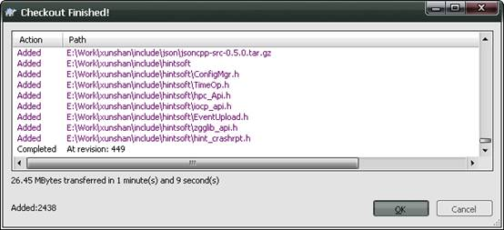
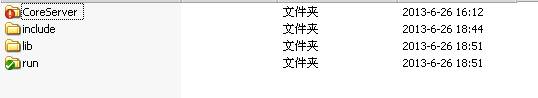
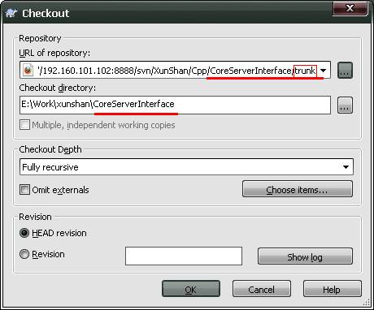
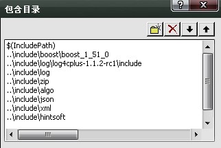
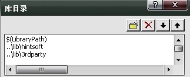

SVN项目导入本地说明
1、浏览SVN代码库
- SVN安装完毕后，在本地任意目录单击右键选择TortoiseSVN –>Repo-bowser可以浏览代码库目录，如右图（1-1）所示:
- 在弹出对话框中输入代码库URL：https://192.160.101.102:8888/svn/XunShan/Cpp/ ,如右图（1-2）所示：
- 单击OK弹出浏览窗口。如右图（1-3）所示
其中存在如下目录树
|-Cpp //对应我们本地的xunshan目录。
|-include //为第三方头文件，或公用头文件
|-lib //第三方库文件目录，或公用库文件
|-run //run 为执行程序所在目录,包含执行文件和其他依赖文件
|-ProjectName //具体项目录
2、建立一个本地工作目录
- 在E盘下新建目录E:\Work\xunshan，其中xunshan与代码库中的Cpp目录相对应。构成如下目录树:
|-Work
|-xunshan
|-pubwin
|-other…
3、导出公用文件
- 公用文件是指，在Cpp目录下的include,lib和run目录下的所有文件。
在目录中按下右键后(您可以在Work目录的icon上按，也可进入Work目录后，在空白的地方按)，选择SVN checkout。接着您可以看到如右图（3-1）所示画面：
其中CheckoutDepth, Omit externals, Revison均按默认配置。
- 在单击OK之前我们可以单击 URL of repository右侧的浏览按钮进行确认，如右图（3-2）所示：
- 在Revision中我们选择Head revision表示最新的版本。 我们单击OK之后工程将被同步到本地。如右图（3-3）所示
- 用同样的方法我们需要将run 目录及 lib 目录 同步到本地。 注意必须保证目录层次与服务器上的层次相同。即include，lib， run 以及主工程目录在同一级。（这是为了保证在工程中使用相同的相对路径）。如右图（3-4） 所示
4. CoreServerInterface工程导入本地
- 工程的导入基本与公用文件的导入方法一致，区别在于将工程导入本地时只需导入trunk(主版本)目录下的内容，如右图（4-1）所示。
5、本地环境配置
- 打开CoreServerInterface.sln工程文件，重新生成
工程对包含目录和库目录进行了如下修改：
在包涵目录中添加了如下目录，如右图(5-1)所示：
..\include\boost\boost_1_51_0;
..\include\log\log4cplus-1.1.2-rc1\include;
..\include\log;
..\include\zip;
..\include\algo;
..\include\json;
..\include\xml;
..\include\hintsoft
在库目录中添加如下库目录如右图（5-2）所示
..\lib\3rdparty;
..\lib\hintsoft
6、其它
- 我们规定以..run/bin目录作为程序的输出目录，Debug版本均需保存为$(ProjectName)D，Release版本直接保存为$(ProjectName)
相关帮助：
tortoisesvn中文教程：http://tortoisesvn.net/docs/release/TortoiseSVN_zh_CN/tsvn-preface.html
Subverson权威指南：svnbook-1.6-zh-r3600.pdf

（1-1）

(1-2)

（1-3）

（3-1）

（3-2）

（3-3）

(3-4)

（4-1）

(5-1)

(5-2)
{kind=link}
{kind=link}
{kind=link}
{kind=link}
{kind=link}
{kind=link}
{kind=link}
{kind=link}
{kind=link}
{kind=link}
{kind=link}
{kind=link}
{kind=link}
{kind=link}